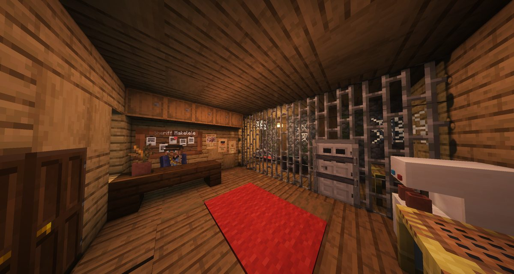
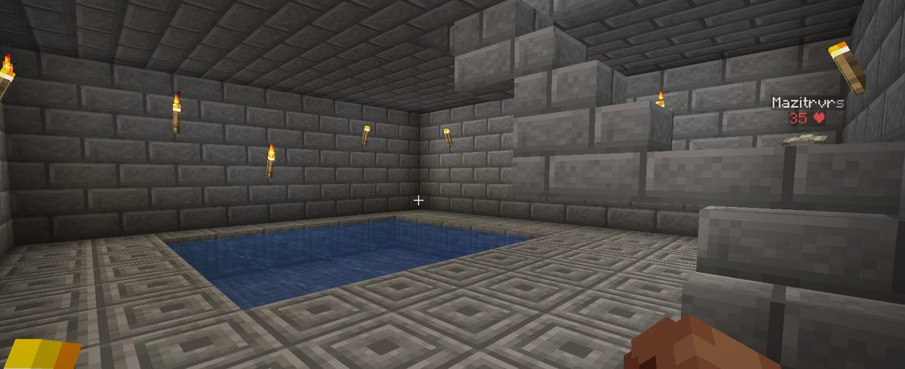
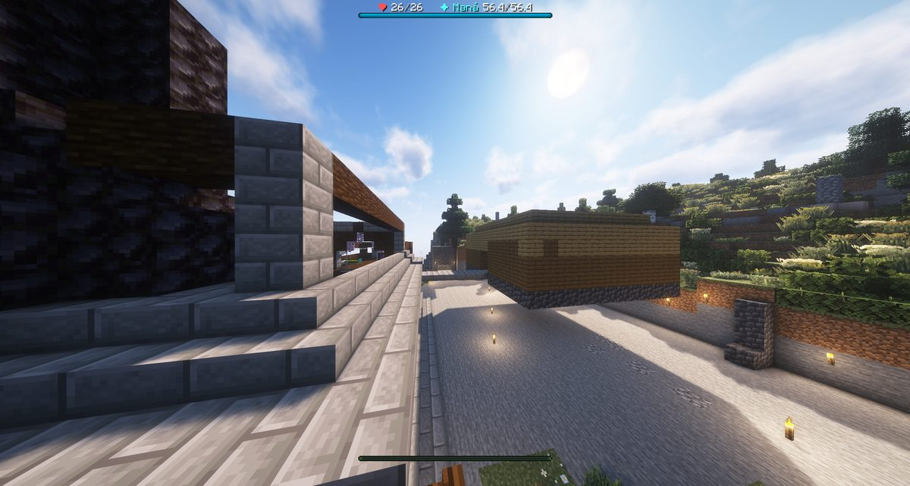

Boletín Oficial del Ayuntamiento del Reino · Se informa, no se alarma
EL HERALDO DEL REINO
Número 526 de agosto de 2026Noche del miércoles 26 al jueves 27 de agosto
ABRIÓ LA CÁRCEL A MEDIANOCHE Y A LAS TRES Y MEDIA YA HABÍA A QUIÉN METER
Fue la jornada más tranquila desde la apertura: las defunciones cayeron a la mitad y no hubo una sola pelea entre vecinos. Duró hasta las tres y media de la mañana, cuando a una vecina le desaparecieron seis animales del corral y el Reino descubrió que estrenaba cárcel y ladrón el mismo día.
Redactado por la Oficina de Prensa del Ayuntamiento
PORTADA
El Reino estrena cárcel, y en tres horas y media ya tenía clientela

El Centro Municipal de Reconsideración, inaugurado a las 00:02. El Ayuntamiento subraya que no es una cárcel sino un espacio donde el vecino reconsidera, y que la diferencia es importante aunque la puerta sea la misma.
Archivo Municipal · pase el ratón para revelarla
A las 00:02 de la madrugada el Ayuntamiento comunicó la apertura del Centro
Municipal de Reconsideración, primera instalación penitenciaria del Reino. La nota
oficial insistía en que el Centro no castiga: acompaña al vecino en un proceso de
revisión de sus decisiones.
Once minutos después, a las 00:13, GabbyQuill635 hizo la primera
propuesta de ingreso de la historia del Reino:
«Metan al ladrón del carbón ahí.»
ArsarFurro secundó a las 00:16: «sí, creo que igual me robó». El
Ayuntamiento tomó nota de las dos intervenciones y no hizo nada con ellas, que es el
procedimiento.
Tres horas y veintiún minutos más tarde, a las 03:34, a la propia
GabbyQuill635 le desaparecieron tres pandas y tres loros del corral. Esta Oficina
hace constar, sin extraer conclusión alguna, que la primera vecina que pidió una celda
para el ladrón fue la primera en necesitarla ocupada.
El Centro sigue vacío. Ver Sucesos.
ECONOMÍA
El Ministerio subasta a medianoche y el Reino se deja el sueldo
La concurrencia al pie de la Torre, a las 00:30. El Ministerio anunció la puja por escrito y no de viva voz, medida que atribuyó a la transparencia y que evitó que se adjudicara nada por un carraspeo.
Archivo Municipal · pase el ratón para revelarla
A las 00:23 el Ministro Pan convocó al vecindario en la Torre con cinco
minutos de aviso y una sola instrucción: «traigan cacahuates». Se celebró la
primera subasta pública de la historia del Reino.
Salieron siete lotes y hubo puja en todos. Rawson98 se llevó el primero por
33 tras una guerra con LetayReaver; NARUMl el segundo por 30;
Mazitrvrs los rollos por 25; LetayReaver dos más, uno de ellos por
50. El del cierre se adjudicó a NARUMl por 165 Cacahuates, la
operación más cara de la que hay constancia en el Reino.
La subasta dejó además la valoración económica de la jornada, formulada por el propio
Ministro a mitad de una puja que no arrancaba: «pobres». Y una consulta de la
adjudicataria que esta Oficina traslada al Negociado de Moneda sin comentarios:
«¿100 cacas? ¿de vaca sirve?».
ECONOMÍA
El pingüino llegó. A pie, atado y con certificado
Primer cliente satisfecho, según el vendedor. El animal viajó a pie desde el punto de origen: «amarradito».
Archivo Municipal · pase el ratón para revelarla
Se cierra el asunto que quedó abierto en el número anterior. A las 22:05,
SerSM15 entregó al Ministro Pan el pingüino que le había vendido la jornada
anterior por diez Cacahuates y que no había aparecido, dejando al Ministro esperando
veintidós minutos en la plaza y a este boletín con un titular a medias.
El vendedor precisó las condiciones del transporte: «no vino en barca. Lo traje a
pie. Amarradito». Y aportó documentación: una pluma, que según él «es el
certificado de legalidad» del animal.
El Ministro pagó, añadió propina —«te ganaste los dos billetes»— y guardó el
certificado con esta explicación, que no le había pedido nadie:
«La guardaré, no sea cosa que otro ministro me inculpe de algo que no
hice.»
Esta Oficina hace constar que no hay otro ministro. También que el animal, en
palabras del comprador, «tiene malas pulgas», y que se lo llevó a su casa.
ECONOMÍA
Un cargamento se pierde a las 21:46 y aparece a las 22:01
El Ayuntamiento informó a las 21:46 de que había extraviado un cofre con
material de valor cerca de unas coordenadas del valle, y pidió colaboración vecinal
para localizarlo. A los once minutos rectificó la ubicación —«el repartidor reporta
nueva información: en la zona baja del valle, no en la costa»— y advirtió, ya de
paso, de que había cofres señuelo.
A las 22:01 el cargamento estaba localizado y reclamado por lLuqqa. La
búsqueda oficial del Reino duró quince minutos, de los cuales once fueron el
Ayuntamiento corrigiéndose a sí mismo.
URBANISMO
El Ministerio pasó la noche demoliendo, y dice que fue una ayuda
El Ministro Pan «ayudando a demoler», según el pie que él mismo puso a la fotografía. Se aprecian cargas explosivas colocadas y en uso.
Archivo Municipal · pase el ratón para revelarla
A las 00:56, a menos de una hora de haber cerrado la subasta, el Ministerio de
Construcciones difundió una imagen de sí mismo volando un edificio con el pie
«ayudando a demoler».
La reacción vecinal fue inmediata y llegó por duplicado. ArsarFurro: «No
mames, Pan, esa es mi casa». Mariowo_, a la vez: «Mi casa, tío». El
Ministerio respondió a los dos con una sola frase:
«Ya quisierais que yo me dignase a entrar en ellas.»
El asunto se cerró con la que esta Oficina considera la mejor descripción de una
vivienda presentada en lo que va de concurso. ArsarFurro, aclarando cuál es la suya:
«la mía es un pilar de madera de ocho bloques de altura, por el momento».
Dictamen del Ministerio, íntegro: «ganadora».
Se recuerda que el concurso es este domingo y que la Oficina de Urbanismo
sanciona mediante acta. Ver el cartel de este mismo número.
URBANISMO
Expediente 0055 — «Otro día, otro puente», de Mazitrvrs
La obra, fotografiada por su autor a la 01:23 con el pie completo: «Otro día. Otro puente». Cuatro palabras, dos frases.
Archivo Municipal · pase el ratón para revelarla
Tercera obra del mismo vecino en cuatro jornadas, y tercera que une dos sitios que
antes no se tocaban. La Oficina de Urbanismo ha dejado de considerarlo casualidad y ha
abierto una carpeta con su nombre.
Calificación: FAVORABLE. Es el tercero de la historia del Reino y los tres
son suyos.
En un asunto que este departamento considera no relacionado, consta que a las
04:31 el vecino Mariowo_ regaló material a un recién llegado y añadió:
«de nada, vota por Mazi en las próximas elecciones». El beneficiario
contestó «oído el voto comprado» y prometió corresponder. Mariowo_ repitió la
consigna dos horas después, a las 06:12, esta vez sin regalar nada.
El Ayuntamiento recuerda, como en cada número, que el Reino no tiene alcaldía,
que crearla corresponde al gobierno en funciones y que por tanto no hay elecciones a las
que comprar votos. Se hace notar que la campaña continúa igualmente.
SOCIEDAD
Un vecino con dos días declara la guerra a las cabras
A las 04:36, Rockchango advirtió a paps2507 de un peligro
inminente. El recién llegado sacó de aquel episodio una conclusión de alcance:
«Las cabras son el mayor peligro de este Reino. Propongo guerra
contra las cabras.»
Y, a diferencia de la mayoría de las propuestas que llegan a esta Oficina, la
documentó: citó como precedente «la gran guerra emú en Australia de 1932» y
bautizó la suya como la Gran Guerra Cabra. Mariowo_ se adhirió en el acto:
«paps, tú tienes toda la razón».
El Ayuntamiento hace constar que en la jornada anterior retiró setenta y cuatro
cabras en una operación de control, y que en ésta solo han causado tres
defunciones. Es decir: la guerra ya se libró, la ganamos, y nadie se lo dijo al recién
llegado. Se le comunica por este medio.
SOCIEDAD
Una alta, un vecino que llega el viernes y trece a la vez
Fotografía aportada por paps2507 a las 03:33 con el pie «este trabajador definitivamente tiene madera de funcionario». Esta Oficina la publica y no la comenta.
Archivo Municipal · pase el ratón para revelarla
Se tramitó un alta: KERXITOX, a las 22:10.
Y se anunció otra. A las 16:02, un vecino llamado Nico se presentó ante el
vecindario para preguntar por el Reino antes de entrar en él: si conviene elegir
oficio o ir por libre, si hace falta equipo especial, si el Reino admite a quien no lo
tiene. _Cafecito_ volvió a hacer de oficina de acogida —cuarta jornada consecutiva,
sigue sin nombramiento y sin sueldo— y le atendió durante seis minutos.
El interesado explicó que no podrá presentarse hasta el viernes porque está esperando
un envío. Anunció que quiere ser tanque. Le informaron de que al tanque le sienta mal
el agua. Preguntó si eso era cierto y nadie se lo aclaró.
La concurrencia máxima fue de trece vecinos a la vez a las 05:53, la más
alta desde la apertura.
ANOMALÍAS
«¿Alguien más escucha susurros al lado suyo todo el rato?»
Es la consulta que paps2507 dirigió al vecindario a las 03:52, completada
con la única alternativa que se le ocurrió: «o me estoy volviendo loco».
Nadie le contestó.
Esta Oficina hace constar que la consulta se formula dieciocho minutos después de
que a una vecina le desaparecieran seis animales sin dejar rastro, y que las dos cosas
ocurrieron en la misma madrugada. No se establece relación entre ambos hechos. Se ponen
seguidos porque van seguidos en el registro.
Se recuerda al vecino que el Reino no tiene constancia de ningún susurro, que
esta afirmación se ha hecho en los cinco números de este boletín y que en los cinco ha sido
igual de cierta.
ANOMALÍAS
Cuarenta y cuatro grados, un caballo desaparecido y un mapa que se borró
La fotografía que GabbyQuill635 aportó al expediente de sus animales tiene, en un
rincón, un dato que no venía a cuento y que esta Oficina recoge igualmente: 44 °C.
Fue la madrugada más calurosa registrada en el Reino.
Rawson98 comunicó a las 03:14 la desaparición de su caballo, que se
llama COMÚN y que llevaba puesta armadura de diamante. Pidió aviso al
vecindario. Lo recuperó de madrugada: constaba en poder de otro vecino, que se lo devolvió
sin discusión. Es el segundo caballo recuperado en dos números.
Consta además, a las 02:56, la pérdida total de un mapa —«se borró el
mapaaaaa»—, y a las 13:55 la desaparición temporal de todo el terreno
alrededor de un vecino, que se restableció solo. Ninguna de las dos reviste gravedad.
EL PARTE DEL PULSO
La medida contra la Bicha funcionó: las defunciones han caído a la mitad
El número anterior daba cuenta de que la Bicha del granero era la primera causa
de muerte del Reino con 44 defunciones —más que las ratas y los bandoleros juntos— y
de que se había adoptado una medida correctora sobre su presencia en los cuatro
parajes donde aparecía.
Los números de esta jornada. Defunciones totales: 65, frente a las 135 de
la anterior. Menos de la mitad. La Bicha ha pasado de 44 a 20: sigue siendo
la primera causa, pero ya no mata más que todo lo demás junto. Y no hubo ni una sola
defunción causada por otro vecino, frente a las ocho del número anterior.
Esta Oficina se atribuye el mérito sin ningún pudor y recuerda que la revisión se adoptó
a petición de NARUMl, que la solicitó por escrito el día 25 a las 05:21 y que en
esta jornada ha vuelto a encabezar el registro de defunciones con 22. La medida ha
funcionado para todo el mundo menos para quien la pidió.
Los encargos han pasado de 299 a 304. Entran el Seguro de Cobertura
Básica Ampliada de la ventanilla del Banco —que regala carterita, ver el aviso— y las
cuatro lecciones del leñador Albahaca Mohama, que sostiene que los árboles se caen
enteros porque el chupacabras les chupa la savia por la noche y que ésa es la única
explicación que encaja con los hechos.
Y las demás, que no revisten gravedad. Los trece frascos de la Alquimista se
bebían sin efecto · la carta del Gabardinez se pescaba y no constaba · quien tardaba más de
un minuto en cruzar la muralla era devuelto a la entrada · veinticinco recetas del gremio
seguían cerradas por un defecto de redacción en el permiso · los botones que pulsa un
vecino se contabilizan ya a su nombre · y se ha dispuesto que toda avería deje una red
puesta, de modo que ningún vecino se quede tirado mientras se repara. Ninguna
reviste gravedad y todas estaban previstas.
Sucesos · Sumario del día
LO QUE ESTA OFICINA HA PODIDO ESTABLECER
Persona ignorada
EL EXPEDIENTE
Los hechos, por orden, tal y como constan
Los seis carteles que la denunciante repartió a las 03:48, catorce minutos después del hallazgo. Están dibujados uno a uno. Esta Oficina no recuerda una diligencia vecinal presentada con mejor presentación, y desde luego ninguna presentada más deprisa.
Archivo Municipal · pase el ratón para revelarla
03:34.GabbyQuill635 comunica que han desaparecido tres pandas de
su recinto y aporta fotografía. El corral está intacto: vallas en pie, puerta cerrada,
comedero en su sitio. No hay restos.
03:35. Aporta una segunda fotografía y, con ella, el único razonamiento forense
que consta en este expediente, que además es suyo:
«Mis tres ovejas que están a la intemperie siguen vivas, así que
NO fue la lluvia ácida.»
La deducción es correcta y esta Oficina la asume íntegra: si la causa fuera ambiental,
los animales más expuestos serían los primeros, y son precisamente los que están
bien. Lo que se llevó a los pandas eligió.
03:40. Amplía la denuncia: «Tampoco están mis loros!!! DENUNCIA!!!!».
Total: seis animales. 03:48: reparte seis carteles. 04:13:Gaaraham03 hace la única pregunta que hizo nadie en toda la noche —
«¿recompensa?»—. No la hubo.
EL EXPEDIENTE
Quién estaba dentro del Reino a las 03:34
Esta Oficina ha reconstruido el registro de entradas y salidas de la jornada. En el
momento exacto del hallazgo había ocho personas dentro del Reino, y llevaban
dentro esto:
NARUMl · desde las 23:49 — 224 min Mazitrvrs · desde la 01:19 — 134 min el Ministro Pan · desde la 01:24 — 129 min Rockchango · desde las 02:29 — 64 min paps2507 · desde las 02:52 — 41 min Rawson98 · desde las 02:53 — 40 min lLuqqa · desde las 03:14 — 19 min GabbyQuill635 · desde las 03:31 — 2 min
La última de la lista es la denunciante, que llevaba dos minutos dentro cuando
descubrió el corral vacío. Esta Oficina hace notar que eso no la exculpa de nada, porque
tampoco se la acusaba, pero que explica por qué la denuncia llegó tan seguida del
hallazgo.
Y hace notar una segunda cosa, sin subrayarla: el tercer nombre de la lista es el
del Ministro. Figura por el mismo motivo que los otros siete —el registro dice que
estaba— y se publica por el mismo motivo que los otros siete.
EL EXPEDIENTE
Y quién no podía estar: las coartadas
Publicada por ArsarFurro a las 06:07 con el pie «Qué lindos animalitos». Se aprecia un panda y un loro azul. Entre los seis carteles de la denunciante hay un loro azul. Él entró 122 minutos después de los hechos.
Archivo Municipal · pase el ratón para revelarla
Nueve vecinos no estaban en el Reino a las 03:34, y el registro dice a qué hora
llegaron:
Mariowo_ · 8 min después · LetayReaver · 29 min Gaaraham03 · 90 min · Demaxxp · 100 min ArsarFurro · 122 min · _Cafecito_ · 139 min TitanWarhammer · 175 min · LiliRochefort · 227 min SerSM15 · 730 min
El caso de la fotografía. Dos horas y media después del hallazgo, ArsarFurro
publicó la imagen que se reproduce. Hay un panda. Hay un loro azul. Y entre los seis
carteles de la denunciante hay, en efecto, un loro azul.
Esta Oficina la publica y publica su coartada en el mismo párrafo, porque las dos
cosas constan igual: entró en el Reino a las 05:36, dos horas y dos minutos después
de los hechos, y la fotografía es de media hora más tarde. Se hace constar además que los
pandas y los loros son fauna propia de la selva, que la imagen está tomada en una
selva y que en el Reino hay selva. Un panda tumbado en la hierba no es una prueba de
nada. Es un panda tumbado en la hierba.
EL EXPEDIENTE
No es el primero: van cuatro denuncias y ningún detenido
Lo que convierte esto en un asunto y no en una anécdota es que ya había pasado.
Consta en los archivos de este boletín:
25 de agosto · LetayReaver denuncia el robo de «carbón, PANDAS, hornos,
madera y cultivos» 26 de agosto, 22:00 · Jooan786: «¿quién me robó mi yunque?» 27 de agosto, 00:16 · ArsarFurro: «sí, creo que igual me robó» 27 de agosto, 03:34 · GabbyQuill635: tres pandas y tres loros
La palabra «pandas» ya estaba escrita en un expediente dos días antes. Es el
mismo modo de proceder: animales y material que desaparecen de recintos cerrados, sin
daños y sin restos.
Llegada a este punto de la investigación, la Administración del Reino ha hecho lo que
hace: ha abierto un expediente. El 0054, por sustracción de fauna doméstica,
contra persona ignorada. Se remite al gobierno en funciones, que no se ha
pronunciado sobre ninguno de los cincuenta y tres anteriores.
El Centro Municipal de Reconsideración, inaugurado esa misma noche con todos los
honores y con una propuesta de ingreso presentada a los once minutos, permanece
vacío.
EL EXPEDIENTE
El Ministerio desmiente algo que no le había preguntado nadie
El Ministro recogiendo, a las 22:05, el animal exótico que había encargado. Cinco horas y media antes de que desaparecieran seis animales de un corral ajeno. Las dos cosas constan.
Archivo Municipal · pase el ratón para revelarla
Esta Oficina no ha solicitado declaración a nadie. Pese a ello, y con la puntualidad de
costumbre, ha recibido una del Ministerio, que se publica íntegra por deber:
el Ministro Pan no guarda relación con la desaparición de los animales, no ha
estado cerca del recinto y dispone de certificado de legalidad para los animales
que obran en su poder.
Sobre ese certificado, y ya que se menciona, esta Oficina puede aportar el dato: es
una pluma. Se la entregó el vendedor del pingüino, junto con el animal, a las 22:05
de esa misma noche. El Ministro la guardó explicando lo siguiente, que tampoco le había
preguntado nadie:
«La guardaré, no sea cosa que otro ministro me inculpe de algo que no
hice.»
No hay otro ministro.
Se hace constar, por rigor y sin ánimo de establecer relación alguna entre hechos que
simplemente ocurrieron la misma noche, que en las siete horas que van de las 22:05 a las
05:05 el Ministro incorporó un animal exótico a su domicilio, voló un edificio
—fotografía suya, pie suyo: «ayudando a demoler»—, inauguró una cárcel y
declaró en la plaza: «llamen a la policía… ah, espera, ese soy yo ahora».
Su expediente abierto sigue siendo el inmobiliario. Esta Oficina no le acusa de nada, y
quiere subrayar que tampoco se lo había acusado antes de que él lo desmintiera.
Oficina de Prensa · Negociado de Orden y Convivencia
♥ El Corazón del Reino ♥
LO QUE SE DICE EN LA PLAZA Y NADIE ESCRIBE
Sección de vida sentimental y asuntos del querer. Lo que aquí se publica consta en el archivo municipal. Lo que cada cual deduzca de ello, no.
EL CORAZÓN DEL REINO
El burro contraataca: hay denuncia por difamación

El material que Rockchango aportó a las 06:13, y que esta Oficina describe como «dos animales de granja en el campo» porque es lo que se ve y porque lo demás lo pone quien mira.
Archivo Municipal · pase el ratón para revelarla
Los lectores recordarán que el número anterior se abría con la denuncia de
Rockchango contra Mazitrvrs por el trato dado a su burra, y con el desmentido
que el denunciado remitió once minutos después sin que se lo pidiera nadie.
El asunto ha escalado. A las 04:34, Rockchango volvió a la carga en la
plaza: «Mazi, ¿qué le haces a tu burra? ¿Por qué la estás tocando?». Y a las
06:13 aportó dos fotografías con un pie que esta Oficina no reproduce, en el
que se atribuía al vecino una actividad de fines reproductivos.
Un minuto después, a las 06:14, llegó al registro lo siguiente:
«Quiero llevar a cabo una denuncia formal hacia rockchango por
difamación.» — Mazitrvrs
Es la primera contradenuncia de la historia del Reino, y deja al Ayuntamiento con
dos expedientes cruzados sobre el mismo burro y ningún órgano ante el que verlos. El
vecindario se pronunció con la misma profundidad que en el resto de los asuntos de esta
sección: _Cafecito_ dijo «parece un mojón» y Mariowo_ escribió
«´3¿», que consta.
EL CORAZÓN DEL REINO
«Menos mal que sos mi novio»
A las 23:58, mientras NARUMl anunciaba por tercera vez en cinco minutos su
intención de quitarse la vida por causas inmobiliarias, Rawson98 comentó al
vecindario: «ya arranca narumi con su muerte».
La respuesta, a las 23:59, fue esta:
«Menos mal que sos mi novio. La que te parió.»
Esta Oficina consigna las dos mitades de la frase porque van juntas y porque separarlas
daría una idea equivocada de cualquiera de las dos. No consta que el noviazgo estuviera
declarado con anterioridad, ni que se haya inscrito después. Consta que él contestó
«jajajaja», lo que en este Reino tiene valor de aceptación.
En el mismo turno de madrugada, _Cafecito_ se presentó a las 05:53 con la
fórmula «soltera pero nunca sola», a lo que Rockchango —que estaba teniendo
una noche muy ocupada en esta sección— replicó: «soltera por decisión… pero de los
demás». Y paps2507, que lleva dos días en el Reino, remató: «decisión de
los hombres». Ninguno de los tres ha vuelto a hablar del asunto.
EL CORAZÓN DEL REINO
Ya son tres los que declaran cosas por el Emperador
Esta sección viene contando desde el número 2 lo que GabbyQuill635 estaría
dispuesta a hacer por el Emperador Duke, y desde el número anterior lo que estaría
dispuesto a hacer Rawson98, que dejó por escrito que no consta en ningún
reglamento.
Ha aparecido el tercero. A las 05:32, Gaaraham03 comunicó a la
plaza, sin que viniera a cuento de nada:
«Duke me tiene cogido por donde él sabe.»
Y cuatro minutos después, a las 05:36, amplió: «si Duke me lo pide me
quito el casco y lo que haga falta».
Con tres declarantes, el Negociado de Vida Sentimental deja de considerar esto una
rareza aislada y abre ficha. Se recuerda a los interesados que el Emperador no ha
acudido, que en toda la jornada no dijo una sola palabra, y que ninguno de los tres ha
recibido acuse de recibo. También se recuerda que eso no parece desanimarlos.
EL CORAZÓN DEL REINO
La posada de Naru cierra por desahucio

La vivienda de NARUMl, fotografiada por el Ministerio a las 00:07 con el pie «va tomando forma». Es la misma casa que en el número anterior aparecía con agua y lava en la entrada.
Archivo Municipal · pase el ratón para revelarla
El número anterior daba cuenta de que la figura conocida como Esqueletreje se
había mudado a casa de NARUMl, y de que la anfitriona valoraba cobrar alquiler. La
posada ha durado una jornada.
A las 23:50, la propietaria descubrió que lLuqqa le había reformado el
salón por su cuenta para instalar una mesa. El desalojo se cursó en directo:
«Te dije que te mudaras. Primer y último aviso. Tienes hasta el final del
día para tomártela de mi casa.»
El inquilino alegó en su descargo que solo había hecho «un cuadrado de madera»
y que «tampoco para tanto». La propietaria recordó entonces el estado en que le
dejaron la casa la noche anterior —«me reventaron los animales, se pelearon en la sala,
me dejaron agua y lava»— y citó de memoria este boletín: «salió en el diario».
Esta Oficina agradece la mención y hace constar que la vecina, tras dos jornadas
consecutivas encabezando el registro de defunciones y perdiendo media casa cada noche,
sigue reconstruyéndola. A las 00:07 el Ministerio la fotografió y escribió que
va tomando forma. Va tomando forma.
Oficina de Prensa · Negociado de Vida Sentimental
Espacio cedido · Ministerio de Construcciones del Reino
El cartel oficial, tal y como se ha repartido. Consta que lo dibujó alguien del Ministerio y que se le pagó con cargo a la partida de señalización viaria.
PRIMER CONCURSO DE VIVIENDAS DEL REINO
Este domingo 30. Quedan tres días. El Ayuntamiento quiere entrar en vuestras casas, verlas por dentro y tomar nota. Dice que es para valorar el esfuerzo vecinal.
Qué se valorará. La fachada, que no parezca hecha con materiales recogidos
durante una pelea. El interior: muebles, detalles y algo más que cofres apoyados
contra la pared. La utilidad —taller, almacén, huerto, cocina o cualquier cosa que
suba el precio por noche—. El encaje con el Reino, que combine con la ruina local sin
espantar al comprador. Y la originalidad: ideas que el Ayuntamiento pueda copiar sin
pagar derechos.
Durante la visita se tomará nota de ubicación, tamaño, vistas, decoración, accesos y
sótanos, así como de cualquier otro dato de utilidad para una empresa externa que,
oficialmente, no existe.
YA HAY PREMIOS, y el Ministerio los ha hecho públicos.
🥇 PRIMER PREMIO — 500 Cacahuates y un puesto oficial en el Ayuntamiento como
Ministro de Decoraciones. Cargo público real, con capacidad para opinar sobre
propiedades ajenas y unas funciones que «serán definidas cuando resulte
administrativamente necesario».
🥈 SEGUNDO PREMIO — 250 Cacahuates, un esqueje de la Red con conexión nueva
instalada en el barrio de la vivienda premiada, y una placa municipal
conmemorativa.
🥉 TERCER PREMIO — 5 Cacahuates, un Diploma Oficial de Tercer Puesto y una
maceta municipal vacía. La planta corre a cargo del premiado.
Esta Oficina se limita a reproducir la escala y a hacer notar que entre el segundo y el
tercer premio hay una diferencia de 245 Cacahuates y una maceta.
Aclaración a última hora. Han llegado a esta Oficina dos consultas de vecinos que
vieron al Ministerio demoliendo la madrugada del jueves y temen que eso forme parte de
la evaluación. No forma parte. La Oficina de Urbanismo sanciona mediante acta,
y el acta no explota.
Se admiten viviendas de un solo pilar. Consta ya una candidatura en esas
condiciones y ha sido calificada de ganadora por el propio Ministerio, en lo que
esta Oficina confía en que fuera una broma.
Las visitas se harán durante el evento y los resultados se anunciarán al terminar.
El Ayuntamiento garantiza que se seguirán todos los procedimientos establecidos. En
cuanto se localicen.
Ministerio de Construcciones del Reino · con supervisión del Ayuntamiento, que solo quiere mirar, medir y quedarse una copia
Suplemento de interés humano · se reparte gratis con este número
LLEGÓ ANTEAYER Y YA LE HA DECLARADO LA GUERRA A UNA ESPECIE: LA JORNADA DE paps2507
Cuarta entrega. El elegido es paps2507, que se dio de alta hace dos días, y el criterio vuelve a ser estrictamente objetivo: es el único vecino que en su segunda jornada ha declarado la guerra a una especie, ha vendido su voto y ha oído voces, y sigue diciendo que esto le encanta.
Oficina de Prensa · Negociado de Vida Vecinal
LA GUERRA
Cuarenta y ocho horas en el Reino y ya tiene un enemigo declarado
paps2507 se dio de alta el 25 de agosto a las 12:58. En su primera jornada
acreditó once méritos en tres horas, dijo que esto era increíble y anunció que se volvería
adicto. En la segunda ha declarado la guerra a una especie animal.
El detonante fue menor: un aviso de Rockchango a las 04:36. La conclusión, no:
«las cabras son el mayor peligro de este Reino». Y a continuación, la propuesta
formal de guerra, con precedente histórico citado de memoria —«la gran guerra
emú en Australia de 1932»— y nombre propio para la campaña: la Gran Guerra
Cabra.
Esta Oficina ha comprobado el precedente que invoca. Existe. No lo ganaron los
humanos.
EL VOTO
Le regalaron madera y a los diez segundos ya tenía compromiso electoral
04:29.Mariowo_ le llama. 04:30. El recién llegado acude:
«dígame», y a continuación «:OOO», «graciaa c,,:» y la
explicación de por qué le venía bien: «no había ni ido a minar, si lo ocupaba».
04:31. El benefactor cobra: «de nada, vota por Mazi en las próximas
elecciones».
04:32. El beneficiario acepta con una fórmula que esta Oficina considera
insuperable en su claridad: «oído el voto comprado ´,:)». Y añade: «así
será».
El Negociado de Régimen Electoral hace constar que no hay elecciones, que no hay
alcaldía, que no hay censo electoral y que, por lo tanto, el primer voto comprado de la
historia del Reino se ha comprado para unos comicios que no existen. La operación es,
en consecuencia, irreprochable.
LOS SUSURROS
«O me estoy volviendo loco»
A las 03:52, dieciocho minutos después del asunto de los animales y en la misma
madrugada de 44 grados, el mismo vecino preguntó al vecindario si alguien más oía
susurros al lado suyo todo el rato.
No le contestó nadie. A las 03:57 escribió «ola vecino» y luego
«gracias», sin que conste a quién.
Esta Oficina no dispone de información sobre el asunto y quiere dejar constancia de que
tampoco la ha buscado.
El parte de la jornada
Duración de la jornada
23 h 7 min, de las 20:39 a las 19:46
Vecinos en el Reino
18 (más el Ministro)
Altas tramitadas
1 — KERXITOX, a las 22:10
Altas anunciadas para el viernes
1
Máxima concurrencia
13 a la vez, a las 05:53 — récord
Defunciones
65 (eran 135)
Defunciones causadas por vecinos
0 (eran 8)
Muertes por Bicha del granero
20 (eran 44)
Cárceles inauguradas
1
Reclusos
0
Animales sustraídos
6 — tres pandas y tres loros
Carteles de SE BUSCA repartidos
6, uno por animal
Sospechosos
8, que son todos los que estaban
Denuncias por difamación
1, la primera de la historia
Expedientes abiertos al Ministro
8, los mismos
Subastas celebradas
1 — siete lotes, puja en todos
Puja más alta
165 Cacahuates (NARUMl)
Pingüinos entregados
1 — a pie, atado y con certificado
Cargamentos perdidos y hallados
1, en quince minutos
Expedientes de obra
1 favorable (el tercero, y los tres son de Mazitrvrs)
Viviendas demolidas por el Ministerio
consta la fotografía, no consta el número
Votos comprados
1, para unas elecciones que no existen
Guerras declaradas a una especie
1
Encargos abiertos
304 — eran 299
Temperatura máxima
44 °C
Intervenciones del Emperador
0
Vecinos que declararon algo por el Emperador
3
Aviso oficial
Queda oficialmente inaugurado el Centro Municipal de Reconsideración. Se recuerda que no
es una cárcel, que el vecino que ingrese lo hará para revisar sus decisiones en un entorno
tranquilo, y que a día de hoy no ha ingresado nadie, pese a existir una propuesta
formal de ingreso presentada once minutos después de la inauguración.
Sobre la sustracción de seis animales: queda abierto el expediente 0054 contra
persona ignorada. Esta Oficina agradece a la denunciante el material aportado y hace constar
que es la primera vez que alguien presenta una denuncia ilustrada. Quien tenga
información puede no darla, como viene haciendo.
Se comunica que el Reino no tiene alcaldía, ni elecciones, ni censo electoral, y que por
tanto las adhesiones, promesas y compras de voto registradas esta madrugada no vinculan a
nadie. Tampoco se prohíben.
No se admiten reclamaciones por susurros no acreditados, por animales de compañía que aparecen
en fotografías ajenas sin estar identificados, por demoliciones anunciadas como ayuda, ni por
certificados de legalidad expedidos en forma de pluma por el propio vendedor.